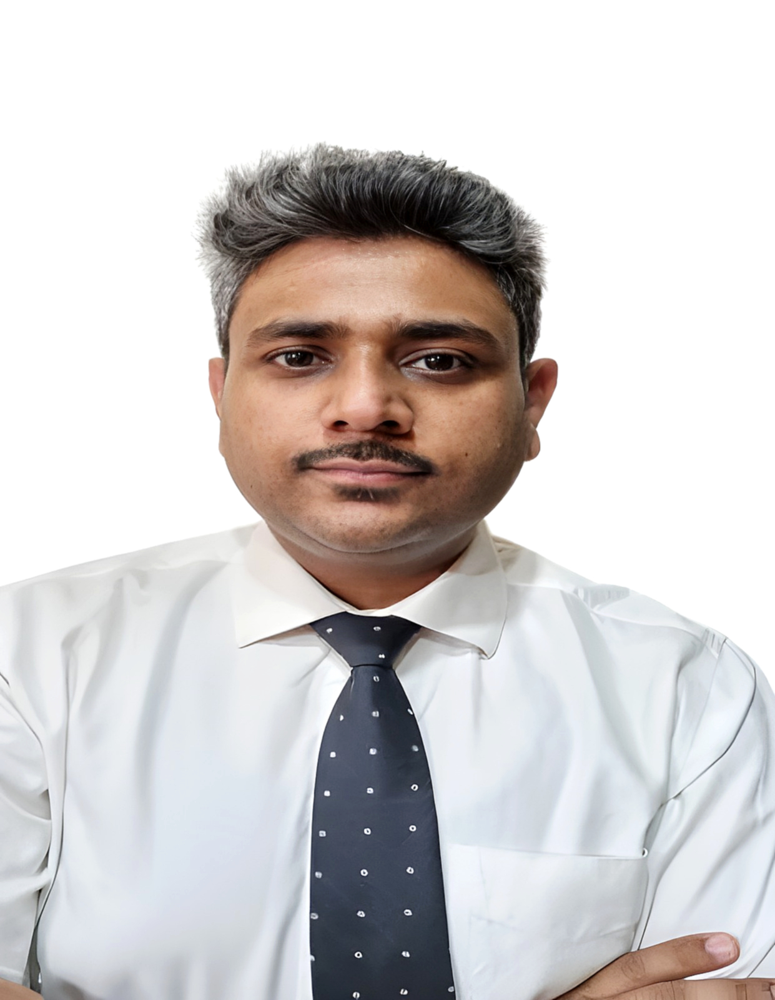

⟡
Operations
Handles routine office work, documentation, follow-ups, and coordination with a steady hand.
I keep office work organized, accurate, and moving. My background spans JK Money, TERI, and ICAR, with hands-on experience in administration, reporting, coordination, and workflow support. Outside work, I follow tech news daily and keep learning AI tools, automation, and productivity systems.

I turn office work into structured progress. My strength is making processes simpler, records cleaner, and communication smoother while staying calm, careful, and dependable.
Handles routine office work, documentation, follow-ups, and coordination with a steady hand.
Comfortable with Excel-based trackers, reporting, and organized record keeping.
Closely follows tech events and keeps learning AI tools, workflows, and productivity systems.
Works carefully, communicates clearly, and follows through on tasks with consistency.
A clear view of growth across administration, MIS, coordination, and continuous learning.
Supporting daily office operations, record handling, follow-ups, and coordination in a fast-moving workplace.
Managed registrations, reporting, coordination, and workflow support across large education-facing programs.
Built a strong base in grant processing, reporting, drafting, and administrative compliance.
Continuing to build business analysis, Excel, Power BI, AI workflows, and personal knowledge-management skills.
Organized operations, accurate reporting, strong coordination, and a genuine interest in technology and AI tools.
Handles office tasks, record keeping, and follow-ups in a steady and dependable way.
Worked on grant release, financial statements, trackers, and structured data management in large institutions.
Uses ChatGPT, Gemini, Perplexity, and Excel automation to speed up documentation and workflow support.
Managed communication across schools, vendors, internal teams, and leadership with clarity.
The strongest signal is consistency: clean execution, practical thinking, and a real habit of learning modern tools.
Direct links to public work samples and repositories.
Reports, trackers, and administrative documents from TERI and ICAR.
Obsidian + GitHub knowledge base for notes, CRM workflows, journaling, and structured learning.
Office productivity, reporting, AI tools, automation, and process management.
Reach me directly through email or LinkedIn. Have a project in mind or an opportunity to discuss? I'd be happy to connect.